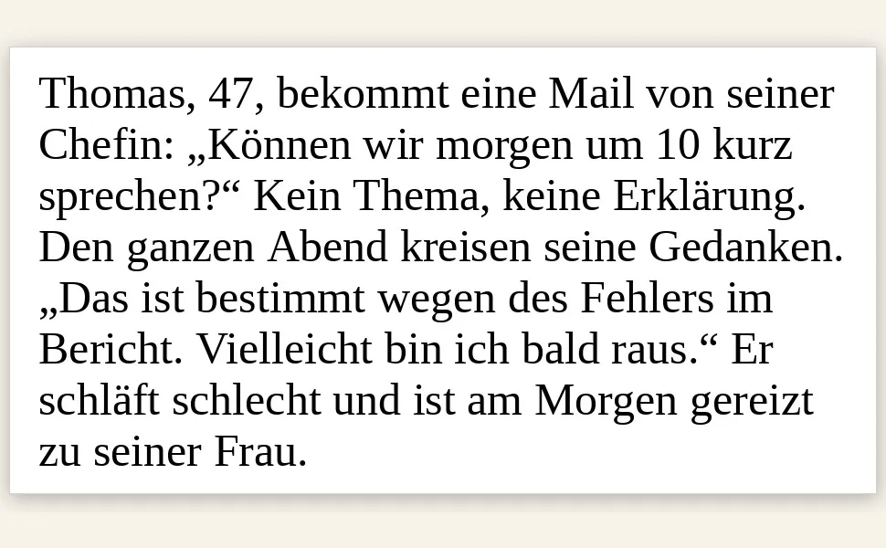
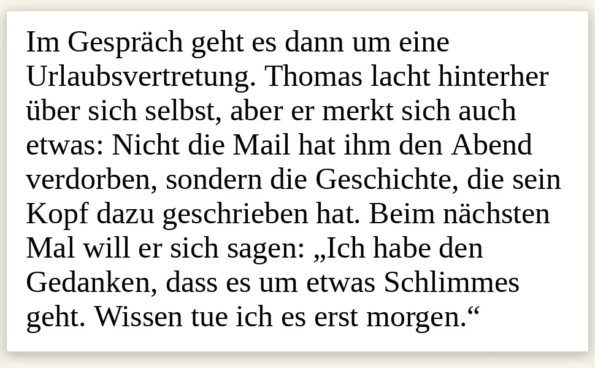

Positiv, die Kraft positiver Gedanken
Wie du Gedanken wie „Das schaffe ich eh nicht“ bemerkst, prüfst und durch fairere ersetzt.
Öffnet amazon.de in einem neuen Tab.
„Können wir morgen um 10 kurz sprechen?“ Kein Thema, keine Erklärung.
Grübeln am Abend ist ein echter Schlafräuber. Hier lernst du, wie du Gedanken erkennst, die dir das Leben unnötig schwer machen, wie du sie überprüfst und durch hilfreichere ersetzt. Kein Dauergrinsen: Es geht darum, Probleme zu sehen und auch das, was trotzdem gut läuft. Ein Ratgeber zur Selbsthilfe, keine Therapie.

Blick ins Buch: Thomas und die Mail von seiner Chefin
Schritt für Schritt geht es vom Verstehen über das Erkennen bis zum Verändern und Üben im Alltag. Ausgedachte Beispiele zeigen, wie das aussehen kann.

Blick ins Buch: Wie das Gespräch am nächsten Morgen ausgeht
Am Ende jedes Kapitels stehen Übungen, die meisten dauern fünf bis fünfzehn Minuten. Im Taschenbuch gibt es dazu eine Doppelseite zum Ausfüllen und ein Ausmalbild im Mandala-Stil.
Dieses Buch ist ein Ratgeber und kein Ersatz für eine Therapie oder Beratung. Wenn es dir gerade richtig schlecht geht, hol dir bitte Hilfe, zum Beispiel bei der Telefonseelsorge unter 0800 111 0 111 (kostenlos, rund um die Uhr).
Öffnet amazon.de in einem neuen Tab.
Passt auch dazu


Mehr zum Thema Persönlichkeitsentwicklung
 In 30 Tagen weg vom eigenen NarzissmusEigene narzisstische Züge erkennen und ändern: 30 Tage, jeden Tag ein Thema und eine Aufgabe.
In 30 Tagen weg vom eigenen NarzissmusEigene narzisstische Züge erkennen und ändern: 30 Tage, jeden Tag ein Thema und eine Aufgabe. Stück für Stück zu mehr SelbstvertrauenEin Stufenplan für Erwachsene: vom „Das kann ich nicht“ zum „Ich probier’s“.
Stück für Stück zu mehr SelbstvertrauenEin Stufenplan für Erwachsene: vom „Das kann ich nicht“ zum „Ich probier’s“.